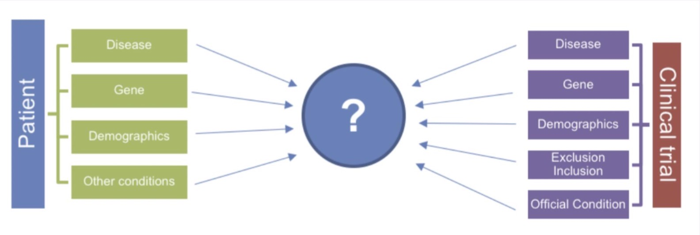

Two major datasets are used, mainly differing by the structure of the queries.
SIGIR 2016 dataset
Analyzed by Koopman and Zucoon (SIGIR 16), this dataset was crawled from ClinicalTrials.gov , and originally in XML format.
Documents:
- Available Trials: 204,855
- Annotated (patient, trial) pairs: ~ (60, 3600)
Queries:
- 60 topics (patient case reports)
- A description (on average 78 words), A summary (on average 22 words)
- Adhoc queries (on average 8.2 keyword queries per topic)
Relevance judgements:
- 0 - Would not refer this patient for this clinical trial
- 1 - Would consider referring this trial upon further investigation
- 2 - Highly likely to refer this patient for this clinical trial
Example Topic:
64-year-old obese female with diagnosis of diabetes mellitus and persistently elevated HbA1c. She is reluctant to see a nutritionist and is not compliant with her diabetes medication or exercise. She complains of a painful skin lesion on the left lower leg. She has tried using topical lotions and creams but the lesion has increased in size and is now oozing.
TREC Clinical Trials 2021 dataset
This dataset comes from the clinial trial of Text REtrieval Conference (TREC) whose biomedical tricks are listed here. The 2021 dataset is used for the purpose of this project.
Documents:
- Available Trials: 375,581
- Annotated (patient, trial) pairs: ~ (75, 19,000)
Queries:
- 75 topics (patient description)
- Topics are lengthy (5 to 10 sentences)
Relevance judgements:
- 0 - Not Relevant: The clinical trial is not in any way relevant to the patient
- 1 – Excluded: The patient has the condition but does not meet the eligibility criteria
- 2 - Eligible. The clinical trial is relevant and the eligibility criteria are met
Example Topic:
A 2-year-old boy is brought to the emergency department by his parents for 5 days of high fever and irritability. The physical exam reveals conjunctivitis, strawberry tongue, inflammation of the hands and feet, desquamation of the skin of the fingers and toes, and cervical lymphadenopathy with the smallest node at 1.5 cm. The abdominal exam demonstrates tenderness and enlarged liver. Laboratory tests report elevated alanine aminotransferase, white blood cell count of 17,580/mm, albumin 2.1 g/dL, C- reactive protein 4.5 mg, erythrocyte sedimentation rate 60 mm/h, mild normochromic, normocytic anemia, and leukocytes in urine of 20/mL with no bacteria identified. The echocardiogram shows moderate dilation of the coronary arteries with possible coronary artery aneurysm.
Clinical Trial Structure
Each clinical trials has a variety of attributes (not all present for all trials).
- brief_title
- official_title
- brief_summary
- detailed_description
- criteria
- condition
- gender
- minimum_age
- maximum_age
- healthy_volunteers
Problem Statement
Given a patient p and a collection of clinical trials C , the goal is to return an ordered list of (p,c) pairs where c ∈ C , such that c is a relevant clinical trial for that patient, and the higher the clinical trial is on the list, the more relevant it is for that patient.
